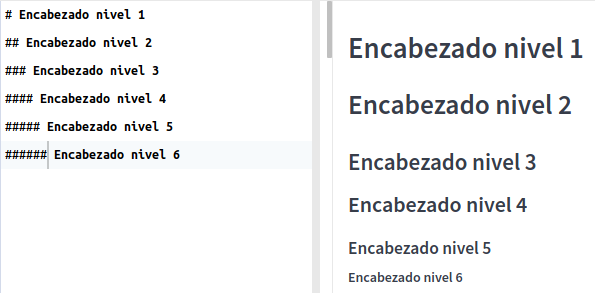
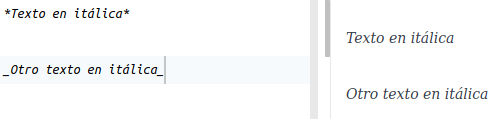

2 Markdown - lenguaje de marcado
2.1 Trabajo previo
2.1.1 Tutoriales
Markdown Tutorial. (s. f.). Recuperado 19 de marzo de 2022, de https://www.markdowntutorial.com/
2.1.2 Otros
- Instale en su computadora el sistema base del lenguaje R y luego el ambiente integrado de desarrollo RStudio Desktop.
- Cree una cuenta gratuita en la plataforma de desarrollo colaborativo GitHub.
2.2 Resumen
Markdown es un lenguaje de marcado ligero ampliamente utilizado en comunicación científica, documentación de programas e investigación reproducible.
2.3 Descripción general
Markdown es un lenguaje de marcado creado en 2004 por John Gruber. Las “marcas” se utilizan para brindar información acerca de la presentación (ej. negritas, itálicas) o la estructura (ej. títulos, encabezados) de un documento. Se caracteriza por ser más sencillo de leer y de usar que otros lenguajes de marcado (ej. Lenguaje de marcado de Hipertexto o HTML), por lo que se considera un lenguaje de marcado ligero. Los documentos escritos en Markdown pueden exportarse a una gran variedad de formatos (ej. HTML, DOC, PDF, LaTex) para ser usados en libros, presentaciones o páginas web, entre otros. Markdown es ampliamente utilizado en comunicación científica, documentación de programas e investigación reproducible.
2.4 Variaciones
Las variaciones de Markdown, también llamadas flavors, son extensiones o modificaciones de la especificación original. Entre las más populares están:
- R Markdown: para el lenguaje R.
- GitHub Flavored Markdown: para la plataforma GitHub.
- Python Markdown: para el lenguaje Python.
- Pandoc’s Markdown: para el programa Pandoc de conversión entre formatos.
- Kramdown: para el lenguaje Ruby.
Puede verse una lista más extensa en https://github.com/commonmark/commonmark-spec/wiki/markdown-flavors.
2.5 Sintaxis
La sintaxis de Markdown permite especificar diferentes componentes de un documento, entre los que están:
- Encabezados.
- Estilos (ej. negritas, itálicas).
- Citas textuales.
- Enlaces a otros documentos (ej. páginas web).
- Imágenes.
- Listas.
2.5.1 Encabezados
Pueden definirse seis niveles de encabezados, mediante símbolos de numeral (#) antes del texto. El primer nivel es el de tamaño de texto más grande y el sexto el más pequeño. En la parte izquierda de la Figure 2.1 se muestra la sintaxis Markdown de los encabezados y a la derecha la forma en que se despliegan en un documento.
2.5.2 Itálicas
Se definen con un asterisco (*) antes y después del texto o con un guión bajo (_) antes y después del texto.

2.5.3 Negritas
Se definen con dos asteriscos (**) antes y después del texto o con dos guiones bajos (__) antes y después del texto.

2.5.4 Citas textuales
Se definen con un símbolo de “mayor que” (>) antes de cada línea.

2.5.5 Enlaces (hipervínculos)
Se definen con paréntesis cuadrados ([]) seguidos de paréntesis redondos (()). En los paréntesis cuadrados se coloca (opcionalmente) el texto del enlace y en los redondos la dirección del documento.

2.5.6 Imágenes
Se definen con un signo de admiración de cierre (!), paréntesis cuadrados ([]) y paréntesis redondos (()). En los paréntesis cuadrados se coloca (opcionalmente) un texto alternativo de la imagen y en los redondos la dirección de la imagen, ya sea local o remota.

2.5.7 Listas numeradas
Se definen con números (1. 2. 3. ...) antes de cada elemento.

2.5.8 Listas no numeradas
Se definen con guiones (-) o asteriscos (*) antes de cada elemento.

2.5.9 Otros elementos de sintaxis
Para conocer otros elementos de la sintaxis de Markdown, se recomienda revisar en detalle la Guía de referencia de Markdown.
2.6 Ejercicios
- Cree un documento Markdown llamado
README.md, en RStudio, y escriba en este un breve perfil académico (curriculum académico).- Incluya información como: nombre, fotografía, datos de contacto, áreas de interés, carrera, cursos aprobados, publicaciones, etc.
- Puede usar información ficticia (no incluya datos confidenciales o sensibles).
- Especifique la fuente de las imágenes (y de cualquier otra información para la que sea necesario) y no utilice imágenes para las que no tiene autorización. Considere utilizar sitios con imágenes con licencias abiertas (ej. Wikimedia Commons, Unsplash, FreeImages).
- Asegúrese de utilizar los siguientes elementos de sintaxis Markdown:
- Varios niveles de encabezados.
- Negritas e itálicas.
- Listas.
- Enlaces a sitios web.
- Imágenes (al menos una local y una remota).
- Cree un repositorio en GitHub llamado
perfil-academicoy suba a este el documento que creó en el paso 1. - Cree un sitio web en GitHub Pages con el repositorio creado en el paso 2.
2.7 Recursos de interés
Carrera Arias, F. J. (2020). How to Install R on Windows, Mac OS X, and Ubuntu Tutorial. DataCamp Community. https://www.datacamp.com/community/tutorials/installing-R-windows-mac-ubuntu
Markdown Guide. (s. f.). Recuperado 10 de abril de 2022, de https://www.markdownguide.org/